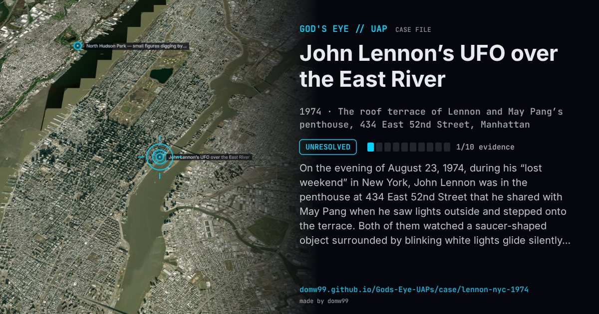

John Lennon’s UFO over the East River

On the evening of August 23, 1974, during his “lost weekend” in New York, John Lennon was in the penthouse at 434 East 52nd Street that he shared with May Pang when he saw lights outside and stepped onto the terrace. Both of them watched a saucer-shaped object surrounded by blinking white lights glide silently past near the river; it was not a helicopter or a balloon, Lennon said, and it was very near. He tried to photograph it, but no pictures came out; he reportedly called the police and was told that others had called about it too. He noted it in the sleeve of Walls and Bridges (“On the 23rd Aug. 1974 at 9 o’clock I saw a U.F.O. – J.L.”) and in the line “There’s UFOs over New York and I ain’t too surprised” in Nobody Told Me.
Explanation
No one has matched it to an aircraft, helicopter or blimp, but there is little to test: the photographs Lennon said he took came out blank, and the only record is his and May Pang’s accounts. Lennon himself said it was not a helicopter or a balloon.
What was seen
Shape: A saucer-shaped object surrounded by blinking white lights, gliding silently
Witnesses: John Lennon and May Pang
Duration: A few minutes
Sources
- Wikipedia — May Pang
- The New Daily — On this day: John Lennon reports seeing a UFO in New York City (2021)
- ABC News — excerpt from May Pang’s Instamatic Karma (the move to 434 East 52nd Street)
Browse
- United States
- 1970s
- Unresolved
- Close encounters
- Many independent witnesses
- Lights and fireballs
- Discs and saucers